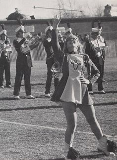
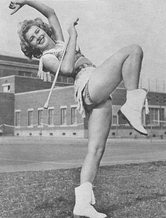
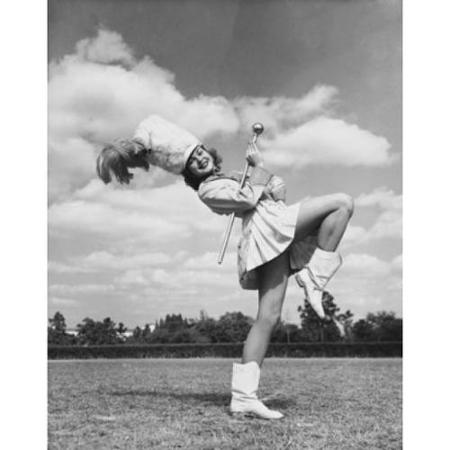
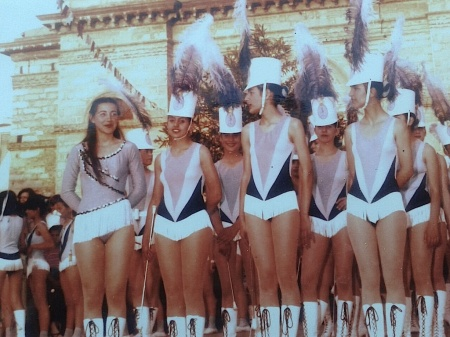
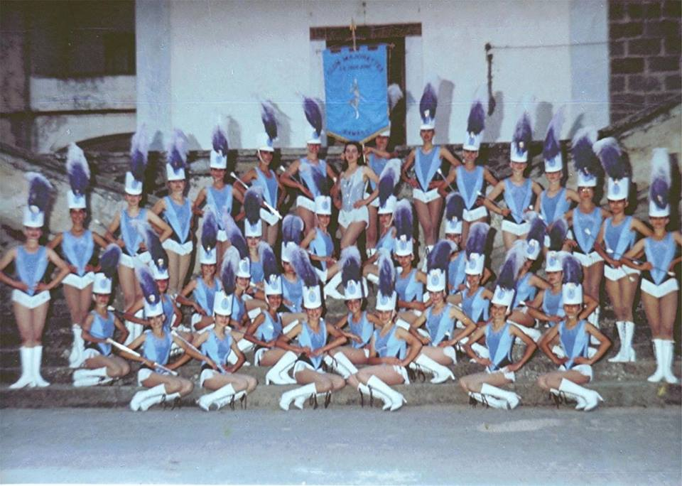
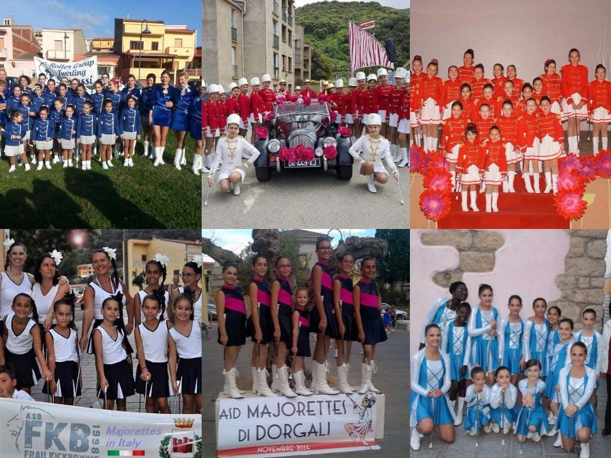

Le Origini e la Storia delle Majorettes |
La disciplina praticata dalle majorette è detta "twirling" dall'inglese "to twirl = roteare", cioè ciò che questi gruppi di atlete fanno con i loro bastoni. Le origini di quste esibizioni sarebbero da ricercarsi nelle isole Samoa, nell'Oceano Pacifico, dove le danzatrici, in particolari occasioni, usavano accompagnare i propri balli con bastoni colorati. Si giunse così nell'America degli anni '20 quando, durante le esibizioni delle bande musicale, era usuale la presenza di un mazziere che si esibiva manovrando una lunga asta di legno.
Nel tempo l'asta mutò di forma e dimensioni, perfezionandosi al fine di diventare sempre meglio manovrabile. Fu così che, negli anni '30, a scopo folkloristico nacquero i primi gruppi di majorette. Queste ragazze divennero sempre più popolari ed ammirate, lo coreografie divenivano più raffinate e complesse e pian piano la febbre del bastone rotante di diffuse nel mondo. Ad oggi, si assiste non di rado a vere e proprie competizioni di twirling tra gruppi di majorette organizzate delle federazioni mondiali: la prima inglese e la seconda nata dall'unione di Francia, Italia, Belgio, Germania ed altri stati con l'intento di far conoscere e diffondere questa disciplina all'interno del vecchio continente.
|  |  |  |
Gli anni d’oro del twirling sardo
Erano i primi anni ottanta, quando il twirling, la disciplina sportiva di cui le majorette propongono un assaggio nelle loro parate coreografiche, si affacciava in Sardegna.
Quello delle "Isolane" di Samassi fu uno dei primi, e migliori, gruppi di twirling sardi.
Gli insegnanti arrivavano ‘dal continente’, perché nell’Isola nessuno avrebbe potuto insegnare i gradi (i livelli) e gli esercizi alle giovani allieve.
Contemporaneamente, però, il gruppo si dedicava anche alle sfilate, come majorette.
Molto spesso per semplificare e spiegare cosa è il twirling, sport poco conosciuto, si fa riferimento alle majorette, che in maniera molto più coreografica eseguono gli esercizi base della disciplina.
Mentre le majorette si limitano alle parate e alle esibizioni di piazza, le atlete gareggiano.
Gli allenamenti cosistevano nel marciare ininterrotamente,in una palestra ancora in costruzione.Poco dopo il gruppo orignario si divise in due formazioni:Le Isolane e Le Twirling.
|  |  |
Le majorettes sarde oggi:
Dopo un lungo periodio di assenza dalla Sardegna si sono ricostituiti diversi gruppi sparsi nell'isola. Nell'estate del 2016 si sono svolti dei raduni a: Carloforte, Sanluri, Berchidda, Tempio e Dorgali. Visto il successo e la grande partecipazione di tutti i gruppi, a Gennaio 2017 si son potuti riprendere i campionati regionali, che termineranno ad Aprile.
|  |
|